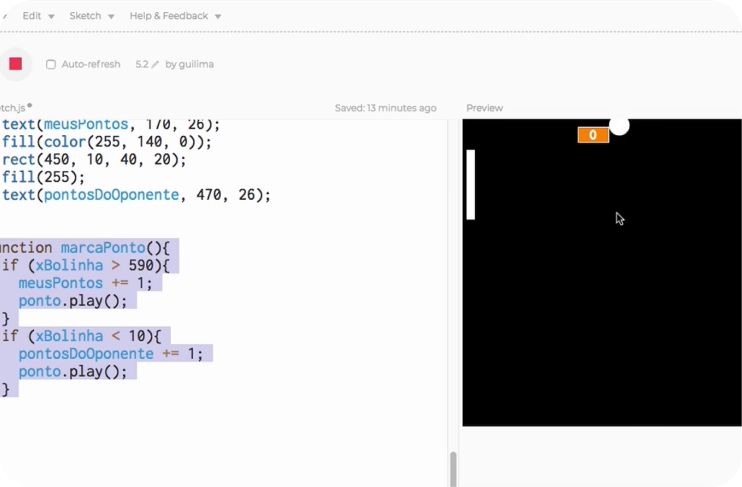
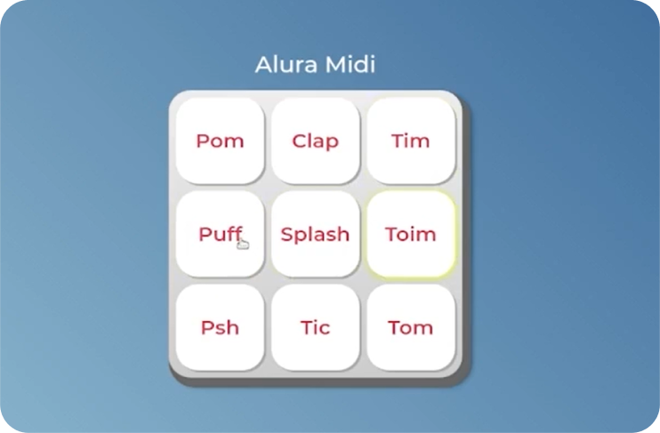
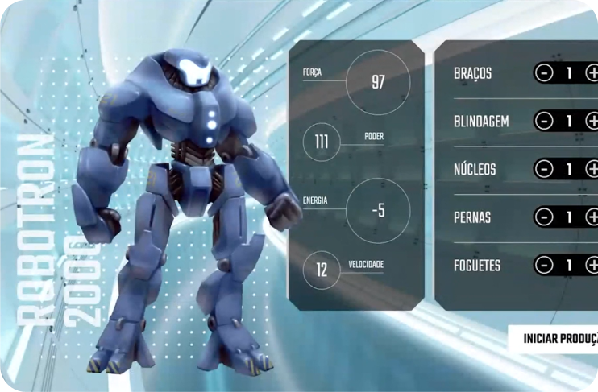

Meus
Aqui estão alguns projetos desenvolvidos durante os estudos na plataforma alura, os quais me ajudaram bastante a entender conceitos básicos de HTML, CSS e JS.



Aqui estão alguns projetos desenvolvidos durante os estudos na plataforma alura, os quais me ajudaram bastante a entender conceitos básicos de HTML, CSS e JS.